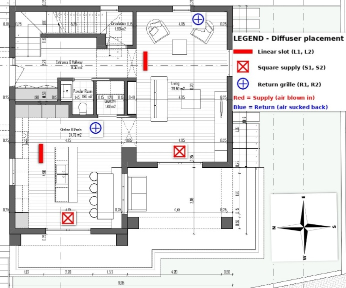
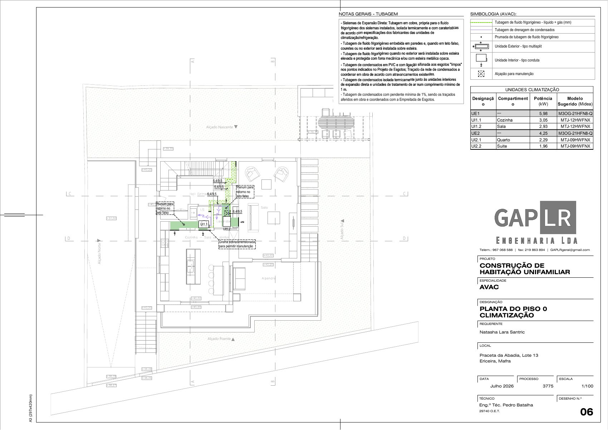
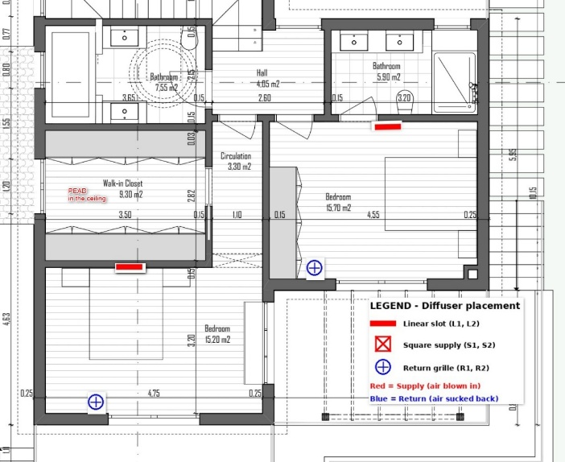
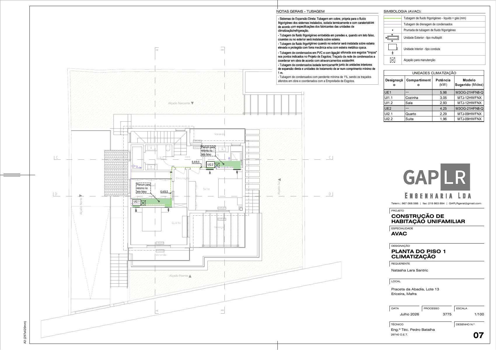
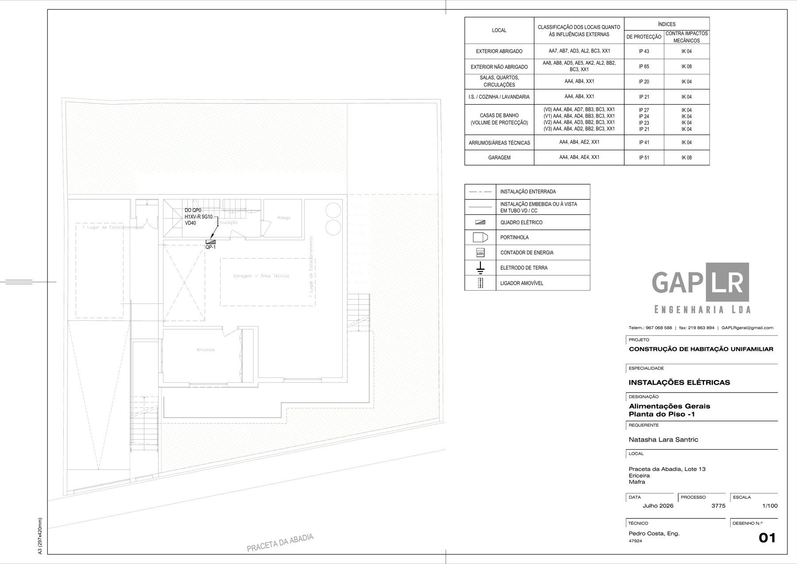
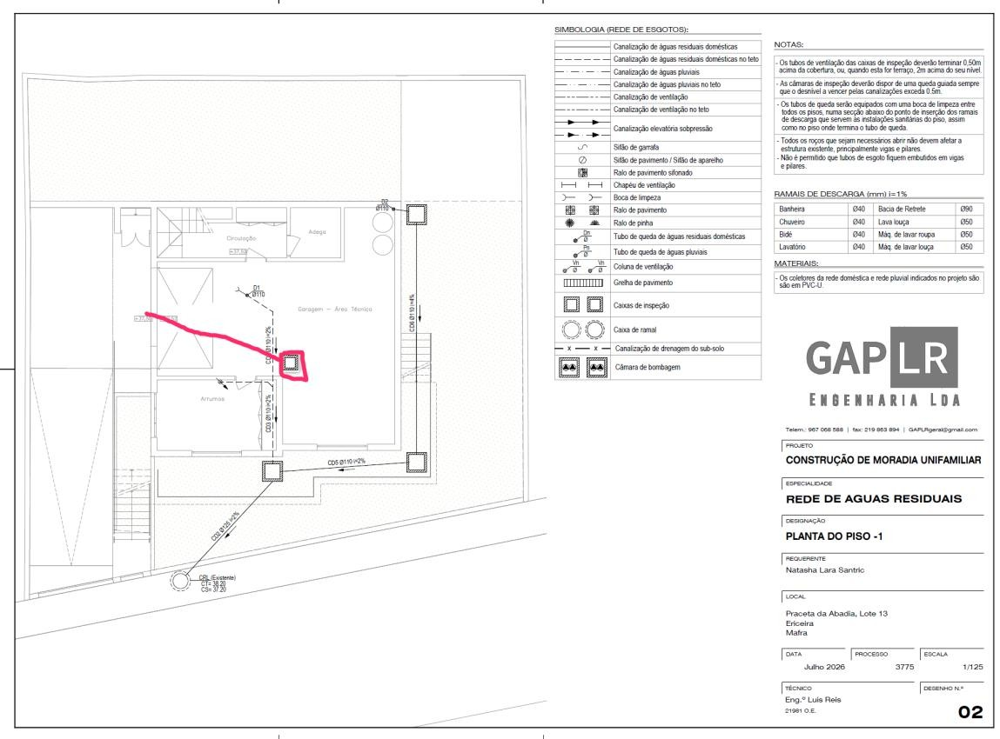
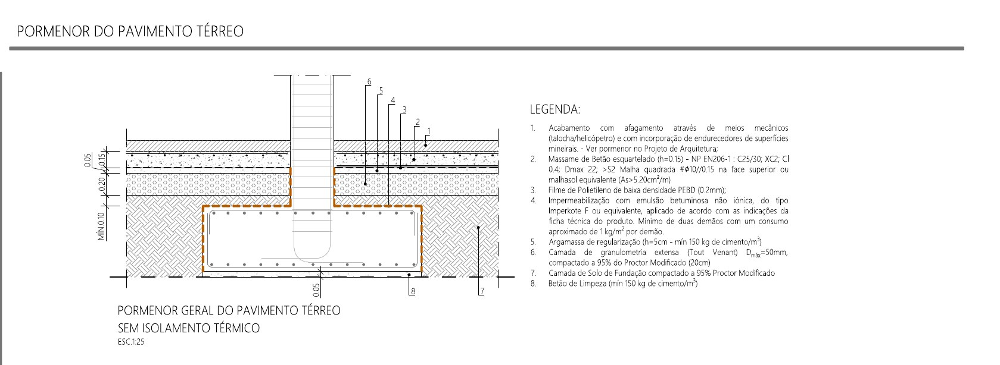
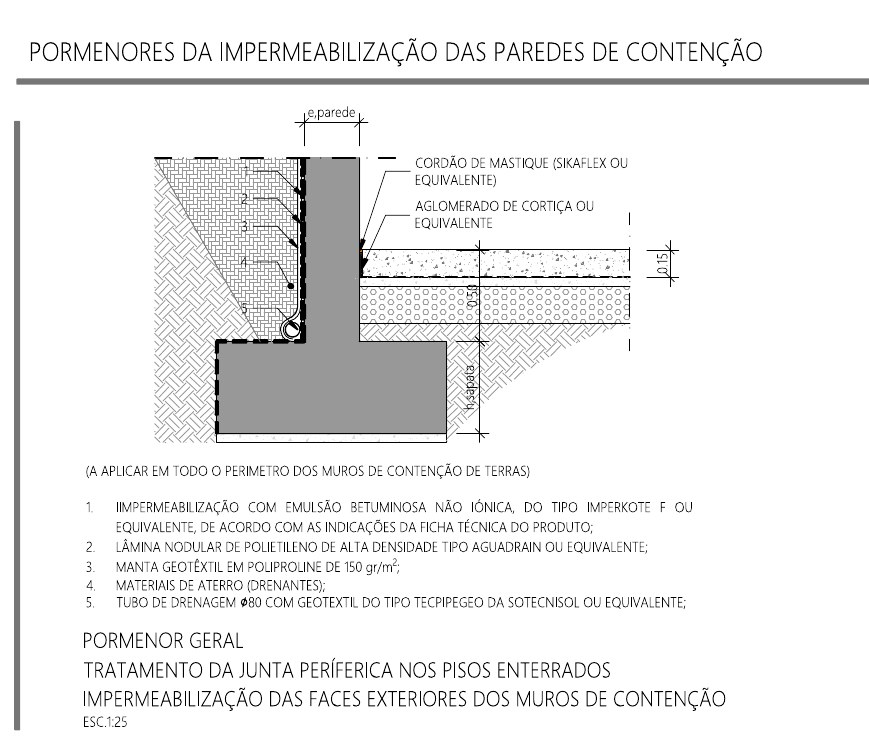
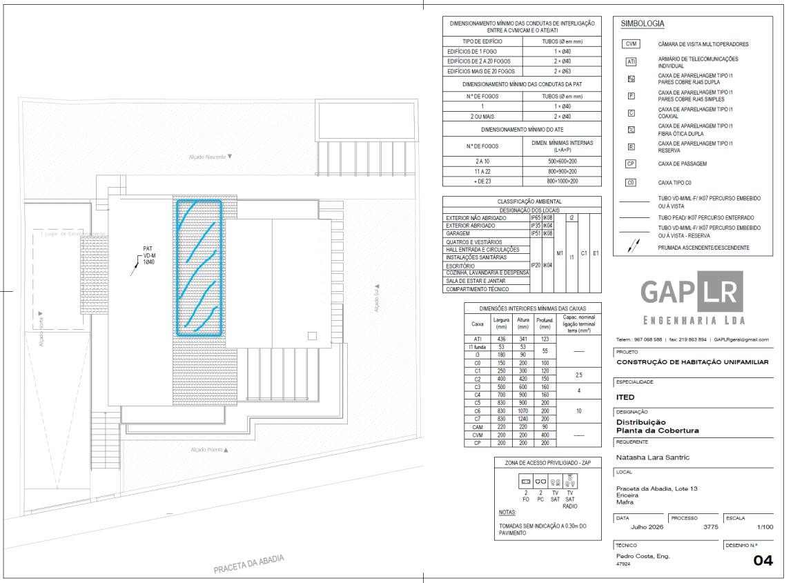

Our technical choices
What we, the owners, specified for the building services, shown next to what the engineering design contains. Where the two differ, the point is marked to confirm and addressed to the trade concerned.
HVAC Engineering choices to confirm
Two documents exist and they do not say the same thing:
- Owners' specification factsheet (July 2026): what we asked for.
- Engineering design, AVAC (GAP LR, July 2026): what the engineer drew.




Where the two differ
Comparison read from the two documents by the owners. It is not an engineering opinion. The engineer confirms or corrects each line.
| Point | Owners' factsheet | Engineering design (AVAC) |
|---|---|---|
| Indoor units | 2 ducted units, one per floor: Mitsubishi PEAD-M71JA (7.1 kW) for the ground floor, PEAD-M50JA (5 kW) for the first floor | 4 ducted indoor units, one per room, suggested models Midea: UI1.1 kitchen 3.05 kW and UI1.2 living 2.93 kW (MTJ-12HWFNX), UI2.1 bedroom 2.29 kW and UI2.2 suite 1.96 kW (MTJ-09HWFNX) |
| Position of the indoor units | Ground floor unit suspended from the garage ceiling, ducts through sleeves in the slab. First floor unit in the attic above the circulation hallway | Units drawn in the false ceiling of each floor, with a return plenum in the false ceiling |
| Zoning | 4 zones (kitchen, living, bedroom 1, bedroom 2) from 2 units, using 2 PAC-ZC40H-E zone controllers with dampers | One indoor unit per room. No zone controller shown |
| Outdoor units | 2 mono split units (SUZ-M71VA and SUZ-M50VA), grouped on the north facade | 2 multisplit units, suggested model Midea M3OG-21HFN8-Q: UE1 5.98 kW for the ground floor, UE2 4.25 kW for the first floor. Drawn outside at basement level |
| Capacity per floor | 7.1 kW ground floor, 5.0 kW first floor | 5.98 kW ground floor, 4.25 kW first floor |
| Bedroom air return | Low level wall grille, 30 to 50 cm from the floor, opposite the supply, to sweep the air under the vaulted ceiling | Return through a plenum in the false ceiling |
| Ventilation with heat recovery | Centralised enthalpy unit, Mitsubishi Lossnay VL-250 suggested. Position left open: attic or garage | Double flow unit with heat recovery drawn in the basement technical area, ducts rising to both floors. No brand or model named. A kitchen extractor is also drawn |
| Walk in closet | Ventilation supply and extraction, plus an AC duct provision for a later conversion to a room | Not served. See amendment 1 on the plans page |
| Slab sleeves | 8 to 10 sleeves, 150 to 200 mm, cast before the pour | Depends on the answer on unit positions |
| Wood burning unit | None. The chimney was removed from the Wood Home scope | The legend lists a wood or biomass heat recovery unit |
| Brands and models | Mitsubishi Electric | Midea, as suggested models. The ventilation unit has no brand or model |
Addressed to GAP LR (the AVAC drawings are signed by Pedro Batalha) and to Carlos Jorge. Needed before the garage slab is poured, because the sleeves through the slab depend on it.
- Which layout is built: 2 ducted units with zone dampers, or 4 ducted units?
- Where do the indoor units go: garage ceiling and attic, or the false ceiling of each floor? What false ceiling depth does each option need?
- Outdoor units: mono split or multisplit, and on which facade?
- Bedroom returns: low wall grilles or ceiling plenum, given the vaulted ceiling?
- Ventilation unit: position, model, and the facade openings for fresh air and exhaust.
- Capacity and brand: 7.1 and 5.0 kW Mitsubishi, or 5.98 and 4.25 kW Midea? Thermal load calculation supporting the answer.
- List and position of every sleeve through the slab.
- Remove the wood burning unit from the drawings if it is no longer part of the design.
The factsheet ends with a fuller list of questions for the architect, the HVAC engineer and the plumber.
Documents and drawings
The complete engineering set is on the plans page.
Earthing and lightning protection To confirm with the electrical engineer
Owners' factsheet 02, reviewed against the electrical drawings (GAP LR, Pedro Costa) on 13 Nov 2026.
Our preferred position: keep the standard, economical earth rod design of the electrical engineer, subject to verification at installation and electrical testing. Do not add a dedicated lightning protection system unless a competent assessment requires it.


| Point | Owners' factsheet | Electrical drawings |
|---|---|---|
| Earth electrode | Copper clad rods at least 2 m long, linked with 35 mm² bare copper conductor, "according to the project description" | An earth electrode and a removable link are drawn. Rod length and conductor size are not on the drawings we hold |
| Lightning protection system | None, unless a risk assessment requires it | None drawn |
| Surge protection | To ask | Not found on the drawings |
| Photovoltaic | Earthing and bonding of the future array are part of amendment 3 on the plans page | Not on the drawings yet |
Two different systems
- Electrical earthing and bonding supports fault protection and limits dangerous touch voltages.
- A lightning protection system is separate and risk assessed. It may include air terminals, down conductors, an earth termination and surge protection.
- Standard earthing does not make the building lightning proof.
- Earth rods can be supplemented later if measurements show more electrodes are needed. A foundation electrode or buried perimeter ring should not be installed without a coordinated electrical design, and would have to be decided before the foundations are poured.
- Confirm the electrode specification: rod length, number, conductor size. Is it sufficient for the soil conditions?
- Where are the rods located, and do they stay accessible for testing?
- How are main equipotential bonding and surge protection implemented?
- Is a lightning risk assessment or surge protection required under the Portuguese rules?
- How is the future photovoltaic array earthed and bonded?
- What test results and documents are supplied at completion?
References on the internet
Water Engineering choices to confirm
| Point | Owners' factsheet | Engineering design (water supply) |
|---|---|---|
| Domestic hot water | Heat pump water heater, Ariston Nuos Plus S2 WI-FI 250 L suggested, floor standing in the garage, 1 m³ of free air around the unit | A heat pump is drawn. No brand or model named |
| Hot water recirculation | Our position now: no recirculation. The factsheet of July 2026 listed it as optional (Grundfos pump started by push buttons); we no longer want it | A circulation pump for the hot water return and return pipework are drawn |
| Sediment filter | On the main inlet, phase 1 (Atlas Filtri or Honeywell) | Not found on the drawings |
| Water softener | Phase 2. Provisions only now: T junction, bypass valve, isolation valves, floor drain, 220 V outlet, reserved space | Not found on the drawings |
| Rainwater | Not covered by the factsheet. Our intention: a buried tank for garden use only, unpressurised, not connected to the indoor network. Size and position to confirm with Paulo (OTK) | The legend includes a cold water pipe for the reuse of rainwater |
Addressed to GAP LR, the plumber (Edgar) and Gonçalo.
- Hot water recirculation: we do not want it. Remove the return pump and return pipework from the drawings, or tell us what that changes (waiting time for hot water at the upper bathrooms, any regulatory requirement).
- Add the sediment filter and the softener provisions to the drawings, or confirm where they are.
- Rainwater: what does the reuse pipe on the drawings feed, and is a tank included?
- Position of the heat pump water heater and its condensate drain.
Basement provisions

Capped waste and water connections in the basement, so a tap and a shower can be added later without breaking the slab.
- Connect into the existing inspection chamber.
- Critical: confirm the fall for a shower trap. Basement floor at +37.50, existing connection invert at 37.20. If gravity is insufficient, a pumping chamber.
- Venting included. Cold and hot water stubs in the same operation.
- Stubs capped, photographed and recorded before the pour. Their passage through the slab must be sealed with the waterproofing (see basement waterproofing below).
Required before the foundation slab is poured. Full text in amendment 2 on the plans page.
Basement waterproofing To confirm before the slab is poured
Owners' factsheet 01, reviewed against the structural drawings (GAP LR, drawing EST-2.01, August 2026) and the rainwater drainage drawings on 13 Nov 2026.
Our aim: a continuous waterproofing system around the basement slab, the wall to slab joints and the retaining walls, agreed before the bottom slab is poured.




What the engineering design already contains
- Slab type: a ground bearing slab (massame), 15 cm, concrete C25/30 XC2, with a top mesh.
- Under the slab: a 0.2 mm polyethylene film, then a non ionic bituminous emulsion (Imperkote F or equivalent, at least two coats of about 1 kg/m² each), on a 5 cm regularisation mortar, on 20 cm of compacted graded aggregate.
- Retaining walls, outer face: the same bituminous emulsion, a dimpled high density polyethylene sheet (Aguadrain type), a 150 g/m² geotextile, draining backfill, and an 80 mm drainage pipe wrapped in geotextile at the foot of the wall.
- Wall to slab joint: a mastic bead (Sikaflex or equivalent) over a cork strip.
- Site drainage: the rainwater drawings show a 160 mm geodrain at 0.5% slope.
Where our factsheet goes further
| Point | Owners' factsheet | Engineering design |
|---|---|---|
| Under slab barrier | Consider a fully bonded preapplied membrane, such as SikaProof A+ or an approved equivalent, on a clean and level substrate | Polyethylene film and bituminous emulsion |
| Construction joints | Waterstops at construction joints, sealed overlaps and sealed penetrations | Mastic bead and cork strip at the perimeter joint. No waterstop shown |
| Slab to wall transition | Connection between the horizontal slab membrane and the wall waterproofing designed and approved before the pour | The two systems are drawn separately. The connection between them is not detailed |
| Pipe penetrations | Sealed. This includes the capped waste and water stubs of amendment 2 on the plans page | Not detailed |
| Wall protection and drainage | Protect the wall waterproofing during backfill, drain where feasible with a confirmed outlet | Already included: dimpled sheet, geotextile, drainage pipe, geodrain. Outlet to confirm |
| Waterproofing admixture in the concrete | Use selectively, after engineering review | None specified |
A membrane does not automatically replace watertight concrete when hydrostatic pressure is significant. The right level of protection depends on the groundwater assumption.
Do not pour the slab while the wall to slab detail is unresolved.
- What is the groundwater assumption for the basement?
- Is the drawn solution (film and bituminous emulsion) sufficient, or is a bonded membrane under the slab justified?
- A detail showing the slab barrier, the transition to the wall waterproofing, the joint treatment, the pipe penetrations and the drainage outlet.
- In which order are walls and slab cast, and how is the barrier kept continuous?
- If a membrane or an admixture is added, please price each separately.
Concept only: final materials and details need the approval of the structural engineer and the membrane supplier.
References on the internet
Photovoltaic pre-installation

Roof and electrical installation prepared for a future array on the south facing roof plane: about 2 kWp at first, provision for about 5 kWp. Full text in amendment 3 on the plans page.